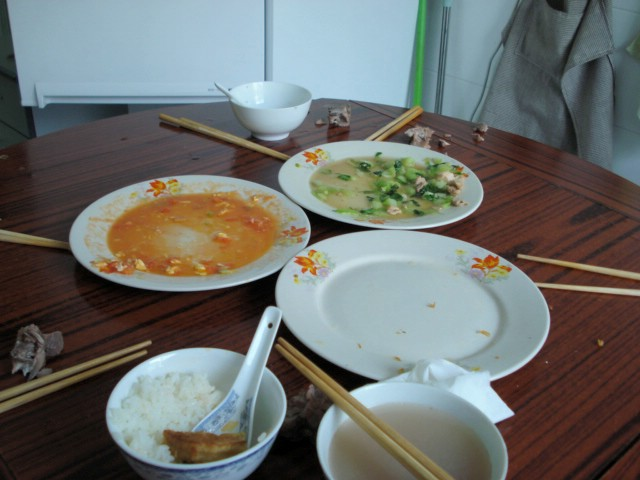

(conclusion)
The soup has a meaty bone stock and we each get at least one piece of bone to enjoy
| Lunch at Work (conclusion) |
||||||||||||||||||
| BACK TO DATE PAGE | ||||||||||||||||||
| I've finally found a country where it's perfectly acceptable to pick up your soup bowl and slurp away. The soup has a meaty bone stock and we each get at least one piece of bone to enjoy |
||||||||||||||||||
| We each have our own rice bowl and soup bowl, but we all eat from the common serving dishes. Reaching way over and picking up something slippery remains a challenge. I'm always the last one done because of the chopsticks thing, but that means I get to dump some leftover sauce into my rice. Peanuts are often in the soup, as was the case here. And you'll notice that bones and things that we don't eat are simply put onto the table. | ||||||||||||||||||
|  | ||||||||||||||||||
| Another yummy lunch | ||||||||||||||||||
| BACK TO DATE PAGE | ||||||||||||||||||